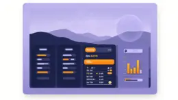

Best NZ Betting Sites 2026 | Top Picks for Kiwi Bettors

The best NZ betting sites give Kiwi punters far more than just a list of odds. They deliver generous welcome bonuses, fast NZD withdrawals, and a massive range of markets covering New Zealand's favourite sports — from Super Rugby and the All Blacks to cricket, horse racing, and the NRL.
These internationally licensed sportsbooks stand out by combining competitive odds with promotions that dwarf what's on offer from domestic operators. Whether you want to back the Crusaders to win the Super Rugby title, punt on the Black Caps ahead of a Test series, or wager on the FIFA World Cup, our top NZ betting sites have you covered.


Bonuses at the Best NZ Betting Sites
New Zealand punters are well catered for when it comes to sportsbook promotions. The best NZ betting sites offer a range of bonuses designed to boost your bankroll from your very first bet to your thousandth. Here's what you can expect and how to make the most of each offer.
Welcome Bonus (Deposit Match)
Most top NZ betting sites will match your first deposit by 100% or more, often up to NZ$500. This is the quickest way to double your starting bankroll before you've even placed a bet.
What to Look for with a Welcome Bonus:- Clear rollover requirements — look for 10x or lower
- Minimum deposit of NZ$20 or less
- Few or no restrictions on which sports you can bet
- Fair expiry date of at least 14 days
- Winnings withdrawable in NZD without currency conversion fees
No Deposit Bonus
A handful of NZ-friendly sportsbooks hand out free credits or free bets just for signing up — no deposit required. These are rare but worth grabbing when available.
What to Look for with a No Deposit Bonus:- No credit card required to claim
- Ability to cash out winnings without depositing first
- Straightforward sign-up — no complex KYC upfront
- Rollover under 15x so winnings are realistic to unlock
- No market restrictions limiting you to one sport
Free Bets
Free bets are among the most common ongoing promotions at NZ betting sites. Many bookmakers offer weekly free bet credits, especially around major rugby and cricket fixtures.
What to Look for with Free Bets:- Expiry dates of at least 7 days — avoid 24-hour rush offers
- Minimum qualifying odds of -200 or better
- Low or no rollover on free bet winnings
- Regular weekly availability, not just one-off promotions
Reload Bonus
Reload bonuses reward you for making additional deposits after your first. A 25%–50% reload on every top-up can significantly extend how long your bankroll lasts.
What to Look for with a Reload Bonus:- Low rollover (5x–10x) since reload amounts are usually modest
- Reload offers available on rugby and cricket, not just casino games
- Better reload percentages at higher VIP tiers
- Minimum odds around -200 to -250
Odds Boosts
Odds boosts are especially popular around All Blacks Test matches and Super Rugby finals. A well-timed boost can dramatically improve the return on a bet you were already planning to place.
What to Look for with Odds Boosts:- Boosts that genuinely beat the current market
- Win limits above NZ$75
- Max bet of at least NZ$25 on boosted markets
- Available on rugby, cricket, and horse racing — not just soccer
- Dedicated boosts hub updated daily
Parlay Insurance
Lose a multi-bet by one leg? Parlay insurance refunds a portion of your stake as a free bet. It's a real safety net for Kiwi punters who love building accumulators around Super Rugby weekends.
What to Look for with Parlay Insurance:- Each leg should meet minimum odds (e.g., -200 or longer)
- Coverage available on NRL, rugby union, and cricket parlays
- Refund cap between NZ$30 and NZ$60 per bet
Loyalty Bonus
The best NZ betting sites reward regular punters with tiered VIP schemes. The more you bet, the better your bonuses — from birthday free bets to personal account managers for high rollers.
What to Look for with a Loyalty Bonus:- Automatic enrolment — no application required
- Progressively better free bets and reload percentages at each tier
- Loyalty points redeemable for NZD cash or free bets
- Exclusive perks such as rugby hospitality packages
- Birthday bonuses and surprise VIP rewards
Popular Sports at NZ Betting Sites
New Zealand punters have a distinctive sports culture, and the best NZ betting sites reflect that. From Super Rugby through to international cricket and the NRL, here's what you'll find markets on and why each sport is worth your attention.
Key events: The Rugby Championship, Super Rugby Pacific, Rugby World Cup
Popular bet types: Match winner, handicap, first try scorer, totals, live betting
Key events: ICC World Cup, ICC Test Championship, home Test series
Popular bet types: Match winner, top batsman, total runs, live in-play betting
Key events: NRL Premiership, State of Origin, NRL Finals
Popular bet types: Match winner, line, first try scorer, NRFI, live betting
Key events: New Zealand Derby, Auckland Cup, Melbourne Cup
Popular bet types: Win, place, each way, exacta, trifecta, same-race multi
Key events: FIFA World Cup, AFC Champions League, Premier League
Popular bet types: Match result, Asian handicap, BTTS, correct score, anytime scorer
Key events: NBL Season, NBA Playoffs, FIBA World Cup
Popular bet types: Moneyline, spread, totals, player props, parlays
Key events: The International (Dota 2), PGL Majors (CS2), LoL World Championship
Popular bet types: Match winner, map handicap, total maps, outright tournament winner
Key events: UFC Pay-Per-View, WBO/IBF title fights
Popular bet types: Moneyline, round winner, winning method, over/under rounds
Key events: The Open Championship, Masters, US Open, Ryder Cup
Popular bet types: Outright winner, each way, head-to-head, round leader, make/miss cut
Popular bet types: Outright winner, head-to-head, futures
Banking Methods at NZ Betting Sites
The best NZ betting sites support NZD deposits and withdrawals without the hassle of currency conversion. Crypto is increasingly popular for fast, fee-free payouts. Here's how the main payment options stack up.
| Payment Method | Deposit Time | Withdrawal Time | Transaction Fees |
|---|---|---|---|
| Visa / Mastercard | Almost Instant | 2–5 business days | Occasionally 1–2% |
| Bitcoin & Crypto | Almost Instant | Under 1 hour | Minimal blockchain fee |
| E-Wallets (Skrill, Neteller) | Almost Instant | Up to 24 hours | Varies by provider |
| POLi / Bank Transfer | Almost Instant (POLi) / 1–3 days | 3–7 business days | Free – low |
What to Look for in a NZ Betting Site
Not all international sportsbooks serve Kiwi bettors equally well. These are the key factors our experts weigh when selecting the best NZ betting sites.
NZD Support
- Accounts denominated in NZD prevent currency conversion fees eating into your winnings.
- Look for sites that accept POLi for instant NZD deposits without a credit card.
Rugby & Cricket Market Depth
- The best NZ betting sites offer 50+ markets per Super Rugby match, not just match winner and totals.
- Live markets for All Blacks Tests should update in near real-time with competitive odds.
Bonuses & Promotions
- Welcome bonuses with rollover of 10x or lower give you a realistic chance of cashing out.
- Ongoing promotions tied to NZ sporting events (e.g., Super Rugby boosts) add genuine value.
Licensing & Security
- Offshore sportsbooks accessible to NZ bettors should hold a reputable licence (e.g., Malta, Gibraltar, Isle of Man, Curaçao).
- SSL encryption and responsible gambling tools are non-negotiable.
Popular Bet Types at NZ Betting Sites
New Zealand bettors have a wide vocabulary when it comes to wagering formats. Here are the most popular bet types you'll encounter at NZ sportsbooks.
Head-to-Head (Moneyline)
Most CommonSimply pick the outright winner of a match. The most popular bet type for rugby union and cricket.
All Blacks -250 vs South Africa +200
NZ$100 on Springboks (+200) → NZ$300 total, NZ$200 profit
NZ$100 on All Blacks (-250) → NZ$140 total, NZ$40 profit
Handicap Betting
Popular in RugbyA virtual points start is given to the underdog to even up the contest. Essential for lopsided All Blacks fixtures.
All Blacks -18.5 (-110) vs Fiji +18.5 (-110)
NZ$110 on All Blacks — they must win by 19+ points to cover.
NZ$110 on Fiji — they can lose by up to 18 or win outright.
Totals (Over/Under)
Great for CricketBet on whether the combined score or stat (e.g., total runs, total tries) will be over or under the bookmaker's line.
NZ vs Australia ODI — Total Runs Over 480.5 (-110) / Under 480.5 (-110)
Back the over if you expect a high-scoring match on a flat pitch.
First Try / First Wicket Scorer
High ValuePredict which player will score first — a try in rugby or take the first wicket in cricket. Big payouts when you get it right.
Rieko Ioane to score first try: +600
Trent Boult to take first wicket: +350
NZ$20 bet on Boult → NZ$90 total if successful
Outright / Tournament Winner
Big PayoutsWager on who will win a competition before it starts. Best placed early in the season when value is at its highest.
Super Rugby Pacific — Outright Winner
Crusaders +300 | Blues +350 | Hurricanes +500
Chiefs +600 | Highlanders +900 | Brumbies +1200
Multi-Bet (Parlay)
Multiplied OddsCombine two or more selections into one ticket. All legs must win. Popular on Super Rugby weekends when multiple matches run simultaneously.
3-leg multi: Crusaders to win -150 | Black Caps to win -200 | Warriors to win +130
NZ$20 multi returns ~NZ$97 total (NZ$77 profit) if all three win
Live / In-Play Betting
Real-Time ActionPlace bets while the match is in progress. Markets update continuously — ideal for rugby when momentum swings dramatically.
Pre-match: All Blacks -14 vs Australia +14
Australia scores early and leads 10–0 at half-time...
Live: All Blacks -4 vs Australia +4 — significant value shift
Mobile Betting in New Zealand 2026
Mobile betting has become the primary way Kiwis punt, whether it's placing a rugby bet from the stadium or cashing out during the second half from your couch. The best NZ betting sites are fully optimised for mobile browsers — no app download required.
Simply visit the site on your iPhone or Android, log in, and you'll have access to the full range of markets, live odds, bonuses, and deposit/withdrawal tools. Mobile-first design means the betting slip is always easy to reach and odds load quickly even on 4G.
Because these sportsbooks are internationally licensed and not restricted to a single jurisdiction, you can log in and bet whether you're in Auckland, Wellington, Christchurch, or abroad — without any of the geo-restrictions tied to app stores.
Is Sports Betting Legal in New Zealand?
Sports betting in New Zealand operates under the Gambling Act 2003. TAB NZ is the only operator licensed to offer sports betting directly to New Zealand residents from within the country.
However, there is no law that prohibits New Zealand residents from placing bets with offshore sportsbooks that hold a valid international licence. Thousands of Kiwi bettors use internationally licensed sites every day, and no individual player has ever been prosecuted for doing so. The offshore sites we recommend hold licences from respected regulators and use bank-grade encryption to protect your account.
Five Tips for Betting at NZ Online Sportsbooks
Whether you're a seasoned All Blacks punter or new to sports wagering, these tips will help you get more out of your time at NZ betting sites.
Follow Super Rugby Form Closely
Form in Super Rugby can shift week to week based on altitude, travel schedules, and squad rotations. Track team news through official club channels before placing handicap or totals bets.
Use Live Betting on Rugby
Rugby union is perfect for in-play wagering. If a strong team starts slowly or falls behind early, live odds will often overreact — creating value on the pre-match favourite.
Compare Odds Across Multiple Sites
Having accounts at two or three NZ-friendly sportsbooks lets you shop for the best odds before each bet. Even a small odds improvement adds up significantly across a full season.
Claim Bonuses Strategically
Don't rush to use a welcome bonus on the first game you see. Wait for a match you've researched thoroughly. A well-placed bonus bet on a well-handicapped rugby line is far more likely to unlock cashable winnings.
Set a Weekly Betting Budget
Decide on a fixed NZD amount you're comfortable losing each week and stick to it regardless of results. The best NZ betting sites provide deposit limit and self-exclusion tools to help you stay in control.